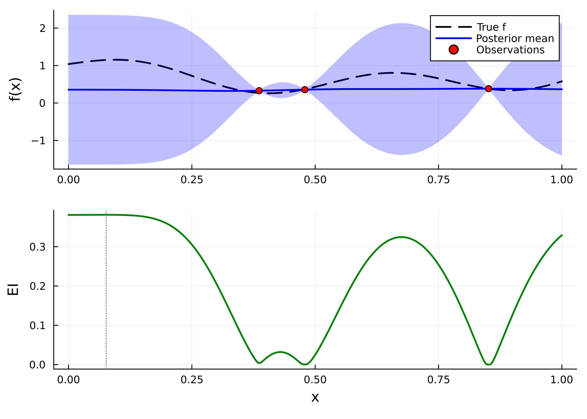
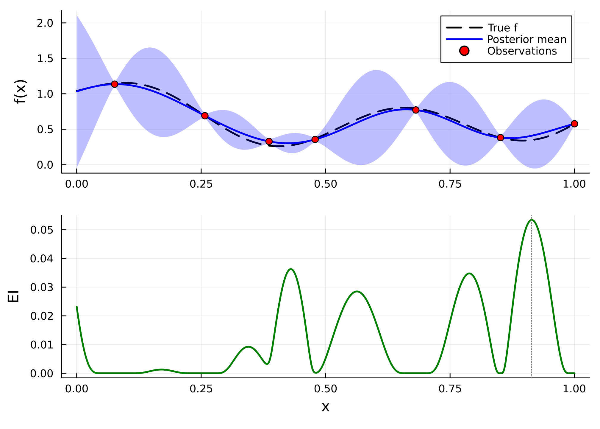
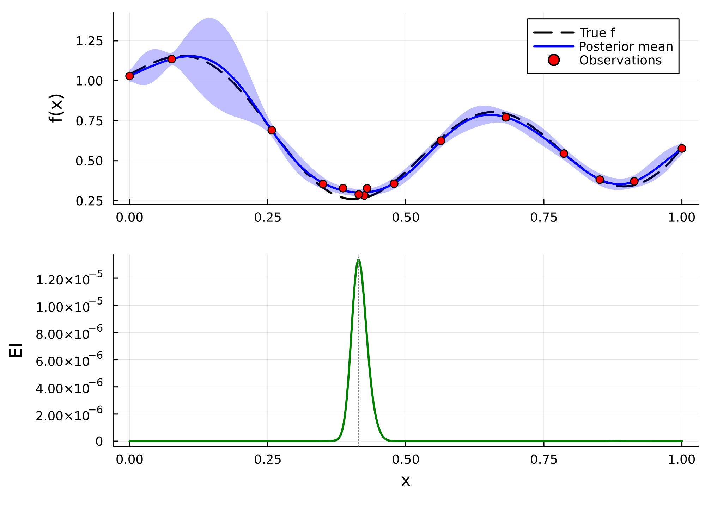

Zero-Order Methods
Goals
- Become familiar with the Nelder-Mead method as a zero-order optimization algorithm.
- Become familiar with Bayesian optimization as a zero-order optimization algorithm.
- Understand the advantages and disadvantages of zero-order optimization.
Packages
Overview
Zero-order methods solve
\[ \min_{\boldsymbol{x}}~f(\boldsymbol{x}) \]
using only function values \(f(\boldsymbol{x})\). No gradients, no Hessians. When would we give up derivative information?
- The objective is a black box; e.g. the output of a simulation or of someone else’s software.
- The objective is not differentiable, or its derivatives are unreliable because evaluations are noisy.
- Each evaluation is so expensive that we can only afford a handful of them; e.g. cross-validation error as a function of a tuning parameter.
- Convenience. We only need to write code for \(f\).
We look at two methods that sit at opposite ends of this list.
- Nelder-Mead is a cheap heuristic for problems where function evaluations are inexpensive.
- Bayesian optimization spends a lot of effort deciding where to evaluate next. It is meant for expensive, possibly noisy objectives.
Another option is to approximate gradients with finite differences and then apply a first-order method; see the notes on automatic differentiation for the limitations of that approach.
Nelder-Mead
The Nelder-Mead method maintains a simplex: a set of \(d + 1\) points in \(\mathbb{R}^{d}\) (a triangle when \(d = 2\)). Each iteration tries to replace the worst vertex, the one with the largest function value, with a better point.
- Order the vertices from best to worst. Compute the centroid \(\boldsymbol{c}\) of all vertices except the worst, \(\boldsymbol{x}_{\text{worst}}\).
- Reflect the worst vertex through the centroid: \(\boldsymbol{x}_{r} = \boldsymbol{c} + (\boldsymbol{c} - \boldsymbol{x}_{\text{worst}})\).
- If the reflected point is the best so far, try to expand further in the same direction: \(\boldsymbol{x}_{e} = \boldsymbol{c} + 2(\boldsymbol{c} - \boldsymbol{x}_{\text{worst}})\). Keep the better of the two.
- If the reflected point is a modest improvement (better than the second-worst vertex), accept it.
- Otherwise contract: try a point halfway between the centroid and the better of \(\boldsymbol{x}_{r}\) and \(\boldsymbol{x}_{\text{worst}}\).
- If contraction fails, shrink every vertex halfway toward the best vertex.
The simplex crawls downhill, stretching along promising directions and shrinking around a minimizer. We stop when the function values at the vertices are nearly equal.
- This is a heuristic. There is no model of \(f\) and, in general, no guarantee of convergence to a stationary point.
- It tends to work well in low dimensions and degrades as \(d\) grows.
- An iteration usually costs one or two function evaluations; a shrink step costs \(d\).
Nelder-Mead is the default method in optim().
Implementation
function nelder_mead(f, x0; maxiter = 500, tol = 1e-8, step = 0.5)
d = length(x0)
# initial simplex: x0, plus a step along each coordinate
simplex = [copy(x0) for _ in 1:d+1]
for j in 1:d
simplex[j+1][j] += step
end
fvals = [f(x) for x in simplex]
iter = 0
while iter < maxiter
# order vertices from best to worst
p = sortperm(fvals)
simplex, fvals = simplex[p], fvals[p]
# stop when function values at the vertices agree
fvals[end] - fvals[1] < tol && break
iter += 1
# centroid of all vertices except the worst
c = sum(simplex[1:d]) / d
worst = simplex[end]
# reflect
xr = c + (c - worst)
fr = f(xr)
if fr < fvals[1]
# expand
xe = c + 2 * (c - worst)
fe = f(xe)
if fe < fr
simplex[end], fvals[end] = xe, fe
else
simplex[end], fvals[end] = xr, fr
end
elseif fr < fvals[d]
# accept the reflected point
simplex[end], fvals[end] = xr, fr
else
# contract
xc = fr < fvals[end] ? c + 0.5 * (xr - c) : c + 0.5 * (worst - c)
fc = f(xc)
if fc < min(fr, fvals[end])
simplex[end], fvals[end] = xc, fc
else
# shrink toward the best vertex
for j in 2:d+1
simplex[j] = simplex[1] + 0.5 * (simplex[j] - simplex[1])
fvals[j] = f(simplex[j])
end
end
end
end
best = argmin(fvals)
return iter, simplex[best], fvals[best]
endnelder_mead (generic function with 1 method)Example: Maximum Likelihood
Suppose \(y_{1}, \ldots, y_{n}\) are an independent sample from a Gamma distribution with shape \(\alpha\) and scale \(\theta\). The MLE of the shape parameter has no closed form, so we need an iterative method. As in second-order methods, we minimize the negative log-likelihood
\[ f(\alpha, \theta) = -\sum_{i=1}^{n} \log p(y_{i} \mid \alpha, \theta). \]
- Derivatives of \(f\) involve the digamma function. With Nelder-Mead we only need the density.
- Both parameters must be positive. We optimize over \((\log \alpha, \log \theta)\) instead so that the problem is unconstrained.
gamma_nll (generic function with 1 method)Start from \(\alpha = \theta = 1\); i.e. zeros on the log scale.
Iterations: 37
Negative log-likelihood: 512.7017795039302
Shape and scale: [3.131760706776783, 1.991681041465406]Compare against the MLE routine in Distributions.jl:
Bayesian Optimization
Now suppose each evaluation of \(f\) is expensive and noisy. We cannot afford to crawl downhill; every evaluation must count. Bayesian optimization uses two ingredients.
- A surrogate model: a statistical model for \(f\) based on the evaluations collected so far. It gives a prediction and an uncertainty at every point.
- An acquisition function: a cheap criterion, computed from the surrogate, that scores how useful it would be to evaluate \(f\) at a new point.
The algorithm alternates: fit the surrogate, maximize the acquisition function to choose the next point, evaluate \(f\) there, and repeat.
Surrogate: Gaussian Process
A common surrogate is a Gaussian process (GP). We model the values of \(f\) at any finite set of points as jointly normal, with covariance determined by a kernel. Here we use the squared-exponential kernel with length scale \(\ell\),
\[ k(x, x^{\prime}) = \exp\left( -\frac{(x - x^{\prime})^{2}}{2 \ell^{2}} \right), \]
so that nearby points have highly correlated function values. Observations are noisy, \(y_{i} = f(x_{i}) + \varepsilon_{i}\) with \(\varepsilon_{i} \sim N(0, \sigma^{2})\).
Given observations \(\boldsymbol{y}\) at points \(x_{1}, \ldots, x_{n}\), the value \(f(x)\) at a new point is normal with mean and variance
\[ \begin{aligned} \mu(x) &= m + \boldsymbol{k}(x)^{\top} (\boldsymbol{K} + \sigma^{2} \boldsymbol{I})^{-1} (\boldsymbol{y} - m \boldsymbol{1}), \\ s^{2}(x) &= k(x, x) - \boldsymbol{k}(x)^{\top} (\boldsymbol{K} + \sigma^{2} \boldsymbol{I})^{-1} \boldsymbol{k}(x), \end{aligned} \]
where \(\boldsymbol{K}_{ij} = k(x_{i}, x_{j})\), \(\boldsymbol{k}(x)_{i} = k(x, x_{i})\), and \(m\) is the prior mean.
- This is just the formula for conditioning in a multivariate normal distribution.
- The matrix \(\boldsymbol{K} + \sigma^{2} \boldsymbol{I}\) is positive definite. We factor it once with a Cholesky decomposition and reuse the factor for both solves.
- The cost of fitting grows like \(n^{3}\) in the number of evaluations. This is fine when evaluations are scarce.
Acquisition: Expected Improvement
Let \(f_{\text{best}}\) denote the smallest value observed so far. The expected improvement at \(x\) is the amount by which we expect \(f(x)\) to fall below \(f_{\text{best}}\), under the surrogate:
\[ \mathrm{EI}(x) = E[\max\{f_{\text{best}} - \xi - f(x), 0\}] = \delta(x) \Phi(z) + s(x) \phi(z), \]
with \(\delta(x) = f_{\text{best}} - \xi - \mu(x)\) and \(z = \delta(x) / s(x)\). Here \(\Phi\) and \(\phi\) are the cdf and pdf of a standard normal, and \(\xi \ge 0\) is a small margin.
- The first term is large where the surrogate predicts a low value; this is exploitation.
- The second term is large where the surrogate is uncertain; this is exploration.
- Maximizing the acquisition function is itself an optimization problem, but a cheap one. In one dimension we can simply evaluate it on a grid.
Example: Tuning a Noisy Objective
The objective below is a stand-in for an expensive, noisy cross-validation error as a function of a tuning parameter \(x \in [0, 1]\).
noisy_f (generic function with 1 method)- There is a global minimizer near \(x = 0.41\) and a local minimizer near \(x = 0.90\).
- A method that only moves downhill may end in either basin, depending on where it starts.
Step 1: Surrogate
# GP prior: squared-exponential kernel, unit variance
const LS = 0.12
const NOISE_VAR = 0.02^2
# Kernel matrix between vectors a (n) and b (m) -> n x m
kern(a, b) = exp.(-0.5 .* ((a .- b') ./ LS) .^ 2)
# Posterior mean and standard deviation at points Xs
function gp_posterior(X, y, Xs)
m = mean(y) # prior mean
K = kern(X, X) + NOISE_VAR * I
Ks = kern(Xs, X) # m x n
C = cholesky(Symmetric(K)) # factor once, solve twice
mu = m .+ Ks * (C \ (y .- m))
V = C \ Matrix(Ks') # n x m
s2 = 1.0 .- vec(sum(Ks .* V', dims = 2))
s2 = max.(s2, 1e-12)
return mu, sqrt.(s2)
endgp_posterior (generic function with 1 method)Step 2: Acquisition
Step 3: The Loop
Each iteration fits the surrogate, picks the grid point with the largest expected improvement, and evaluates the objective there.
function run_bo(rng, X, y, grid, niter)
for it in 1:niter
mu, sd = gp_posterior(X, y, grid)
ei = expected_improvement(mu, sd, minimum(y))
x_next = grid[argmax(ei)]
X = vcat(X, x_next)
y = vcat(y, noisy_f(rng, x_next))
@printf("probe x=%.3f observed=%+.3f best so far=%+.3f\n",
x_next, y[end], minimum(y))
end
return X, y
endrun_bo (generic function with 1 method)The following helper plots the surrogate (top) and the acquisition function (bottom).
function plot_bo(X, y, grid)
mu, sd = gp_posterior(X, y, grid)
ei = expected_improvement(mu, sd, minimum(y))
p1 = plot(grid, true_f.(grid); lw = 2, ls = :dash, color = :black,
label = "True f", ylabel = "f(x)", legend = true)
plot!(p1, grid, mu; ribbon = 2 .* sd, fillalpha = 0.25, lw = 2, color = :blue,
label = "Posterior mean")
scatter!(p1, X, y; color = :red, label = "Observations")
p2 = plot(grid, ei; lw = 2, color = :green, xlabel = "x", ylabel = "EI")
vline!(p2, [grid[argmax(ei)]]; ls = :dot, color = :gray)
return plot(p1, p2; layout = (2, 1))
endplot_bo (generic function with 1 method)Step 4: Test It
Start with 3 random probes.

The shaded band is the posterior mean plus or minus 2 standard deviations. The dotted line marks the next probe.
After 4 iterations:
probe x=0.076 observed=+1.136 best so far=+0.329
probe x=1.000 observed=+0.577 best so far=+0.329
probe x=0.681 observed=+0.772 best so far=+0.329
probe x=0.258 observed=+0.691 best so far=+0.329
After 12 iterations:
probe x=0.914 observed=+0.372 best so far=+0.329
probe x=0.430 observed=+0.328 best so far=+0.328
probe x=0.000 observed=+1.030 best so far=+0.328
probe x=0.564 observed=+0.626 best so far=+0.328
probe x=0.425 observed=+0.283 best so far=+0.283
probe x=0.786 observed=+0.545 best so far=+0.283
probe x=0.350 observed=+0.355 best so far=+0.283
probe x=0.415 observed=+0.290 best so far=+0.283
Bayesian optimization best x = 0.425
True minimizer on grid = 0.406
Total evaluations = 15Advantages and Disadvantages
Advantages:
- Only function values are required. This applies to black boxes, simulations, and objectives that are not differentiable.
- Simple to use; there are no derivatives to derive, code, or debug.
- Bayesian optimization tolerates noise and searches globally, with very few evaluations.
Disadvantages:
- Convergence is slow compared to methods that use gradients or Hessians, when those are available.
- Performance degrades quickly as the dimension grows. Both methods are best suited to a small number of parameters.
- Nelder-Mead is a local heuristic with no convergence guarantee in general.
- Bayesian optimization has substantial overhead per iteration, and it has tuning parameters of its own (the kernel, the length scale, the acquisition function).
As a rule of thumb, if derivatives are available (e.g. through automatic differentiation), use them.